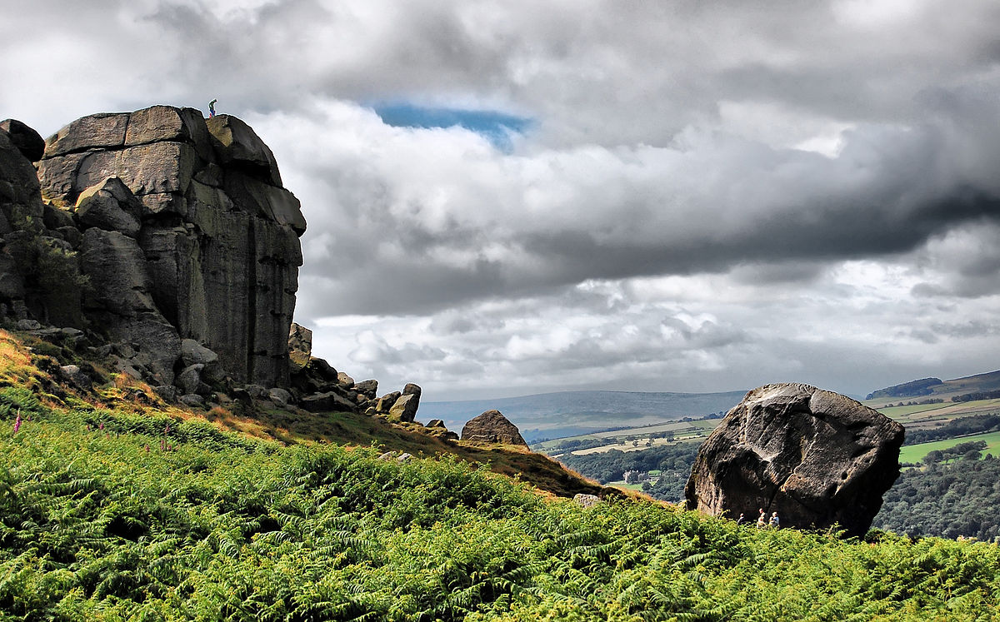
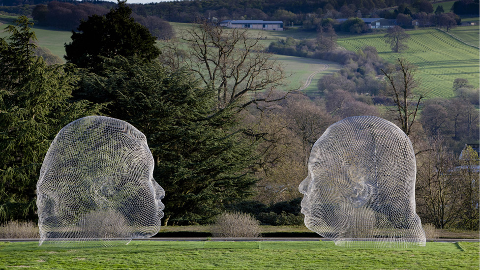
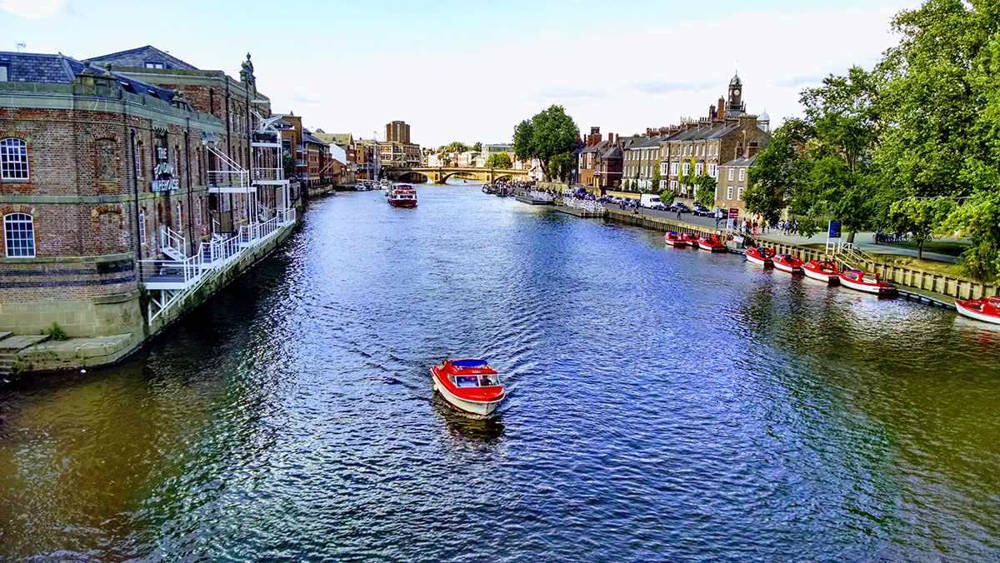

Leeds Freshers Guide: Day Trips!
1 / 3

Ilkley
- Ilkley is a countryside town known for it's 'Cow and Calf' rocks
- It is accessible from Leeds City Centre by car (40 mins) and train (29 mins)
- Ilkley also has many restaurants and bars, and is popular amongst walkers
2 / 3

Yorkshire Sculpture Park
- Yorkshire Sculpture Park is an outdoor art gallery
- The area is a 23 min car journey from Leeds City Centre
- The park has exhibited works from world famous artists such as Henry Moore and Barbara Hepworth
3 / 3

York
- York is a 25 min train journey from Leeds Railway Station
- It is a historic walled city founded by the Ancient Romans, and was once the capital of England
- Attractions include; York Minster, the National Railway Museum and Clifford's Tower
❮
❯